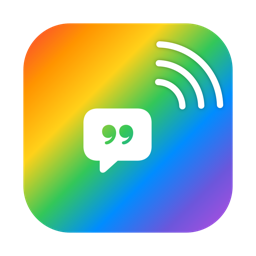
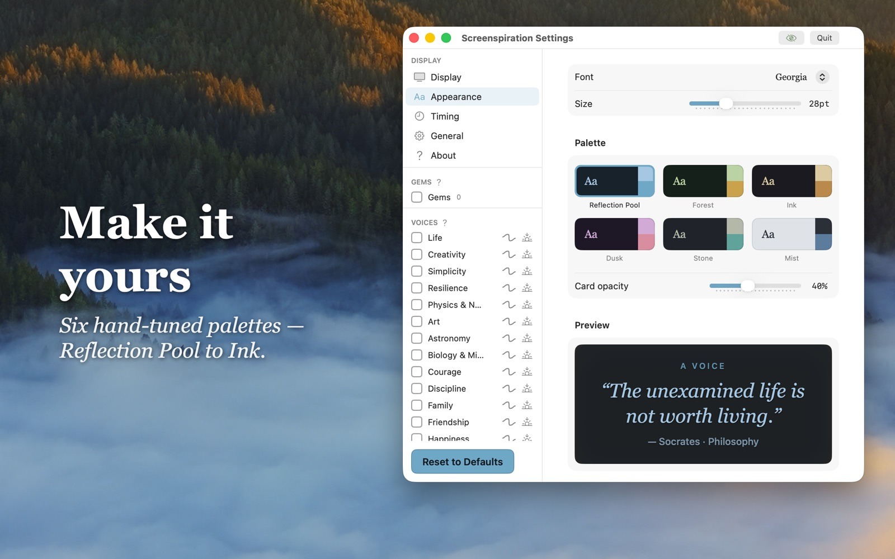
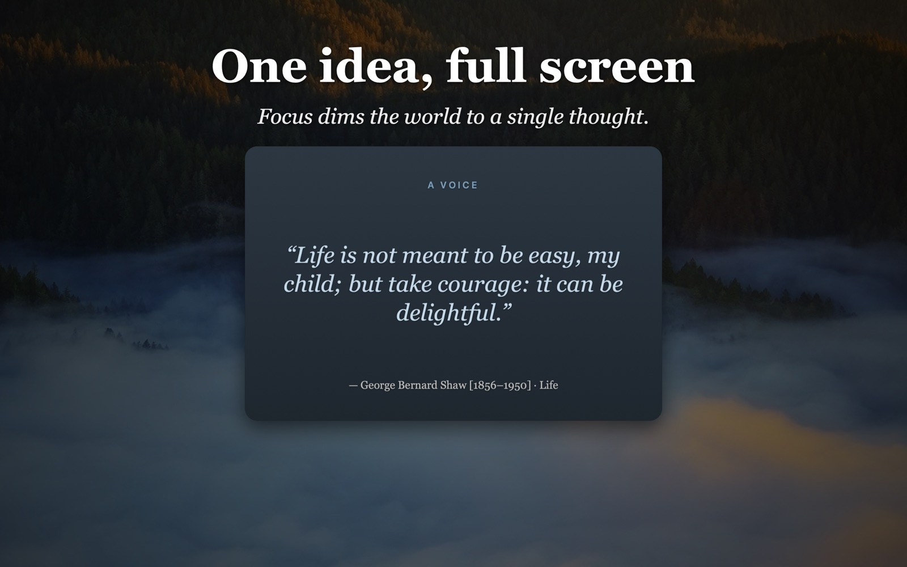
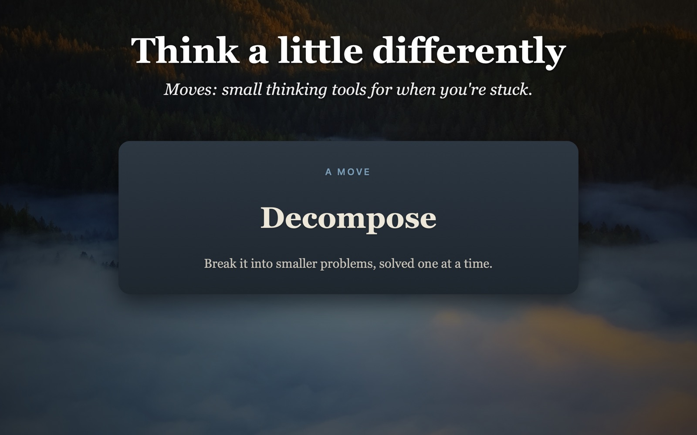
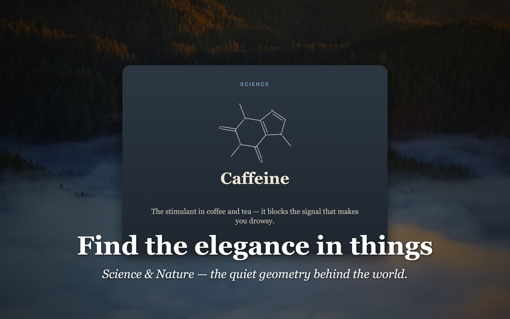

ScreenspirationA calm, ever-changing card of the world's wisdom — living in your Mac's menu bar, drifting across your desktop, always one glance away.
Download on the Mac App Store Free to try — no card required.Screenspiration keeps a quiet stream of inspiration drifting across your desktop. No Dock clutter, no window to manage — it lives in the menu bar and gently rotates a single translucent card, so a good idea is always one glance away. You choose what inspires you, and how often it changes.
Six collections. Turn on the ones that speak to you.
Quotes from thinkers, makers, and doers across history.
Folk wisdom from world languages, many read aloud in their native tongue.
A single word or virtue to sit with.
Timeless qualities drawn from many traditions.
Thinking tools to shift your perspective when you're stuck.
The elegance of formulae and the structures of important molecules.
Pick your lists, set the rhythm, and choose from six calm palettes. Pull any idea full-screen with Focus. Save the lines that land as Gems, and let just those rotate. Build your own lists, too.




No account. No internet. No tracking. Speech is on-device — nothing ever leaves your Mac. Screenspiration collects no data of any kind.
Questions, bugs, or feedback? Email UtaguchiLabs@gmail.com and I'll get back to you.